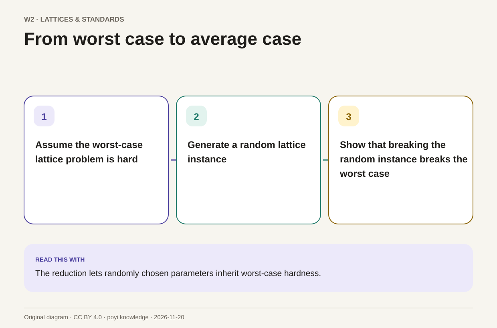

Principles
Theorem: Ajtai's Reduction (Ajtai 归约). Ajtai proves that if a polynomial-time algorithm solves a class of randomly generated lattice instances with non-negligible probability, then it yields a polynomial-time algorithm for the worst-case lattice problem within some approximation factor. The key is “generating hard instances”: the random matrix is not arbitrary but drawn from a distribution that makes breaking it equivalent to breaking the worst case.

Why it matters
Before this, lattice cryptography relied on the empirical judgement that a random instance “looks hard”. After it, a scheme could claim “break the scheme, break worst-case lattices”. It became the template for LWE, Ring-LWE and NTRU security arguments and one reason post-quantum standardisation accepted lattice schemes.
Restate the chain as input → state → transform → output → criterion. Every step should identify who acts, what changes and what evidence remains. A step without evidence is marked unverified, not reproduced.
Applications
As the security-proof skeleton for lattice encryption, hashing, pseudorandom functions and signatures. Deployments do not run Ajtai's original construction, but cite its reduction pattern when arguing parameters.
A shared name may belong to an algorithm, standard, event, person or term; this entry is responsible only for its catalogue binding and does not absorb adjacent records. If versions, regions or institutions define the name differently, the differences stay side by side.
Limits & attacks
A reduction is not an attack and does not prove lattice problems absolutely hard; it shows that if the worst case is hard, the average case is hard. Approximation factors, moduli and dimensions affect the strength. Reductions can be non-tight, giving a security floor far below actual attack cost. They do not cover implementation side channels.
Theorem = (Assumptions ⇒ Conclusion)；Reduction: Adv_A ≤ q · Adv_B + ε. Symbols are catalogue-level variables, not standard constants; parameters, test vectors and clauses remain with the registered source. The model states structural relations, not an implementation audit.

History
Ajtai gave the reduction at STOC 1996, first connecting worst-case lattice hardness to average-case cryptography. Regev used a similar idea for LWE in 2005, and Lyubashevsky et al. extended it to rings. It is one of the starting points of modern lattice cryptography.
Given abstract input x₀ and parameter p, compute y₀ and test it against the criterion; this is a reasoning example, not a measured vector. If the input leaves the domain, keys/parameters are reused, implementation diverges or versions mismatch, the model no longer holds.
Worked example & verification
Formal model and reproduction steps
[\Pr[\mathrm{Bad}_A(\lambda)]\le \varepsilon(\lambda)]
Ajtai's Reduction: the registered public parameters, key material or randomness, and message are mapped through the stated transformation to an output checked against the registered criterion. The worked example is a structural reproduction, not a new test vector; parameter ranges, standard versions and implementation details remain source-bound.
References
- Wikipedia search entry for Ajtai 归约. https://zh.wikipedia.org/w/index.php?search=Ajtai%20%E5%BD%92%E7%BA%A6
- Handbook of Applied Cryptography (Menezes, van Oorschot, Vanstone). https://www.cacr.math.uwaterloo.ca/hac/